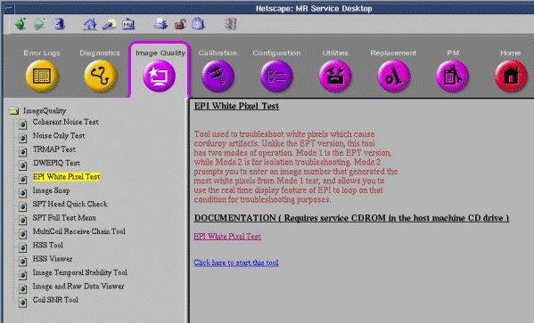

EPI White Pixel Test
Prerequisites
Overview
This procedure uses EPI scans and the raw data mode of recon to analyze the raw data for white pixel artifacts; these can exhibit themselves as corduroy artifacts in images. There are two modes of operation for the EPI White Pixel Test.
-
Mode 1 creates 48 images while iterating on Readout Axis (X, Y, Z), ESP (readout train frequency), and placement of the data acquisition window over the attack "knee" and decay "knee" of the readout trains positive and negative lobes. In addition, Mode 1 generates various report fields and plot files that can be used to analyze white pixels. Mode 1 has been incorporated in the EPT test to be run as a single test.
-
Mode 2 prompts you to enter an image number that generated the most white pixels from the Mode 1 test, and allows you to use the real time display feature of EPI to loop on that condition for troubleshooting purposes.
Procedure
- At the keypad on the front magnet enclosure, press LANDMARK,
then:
- For Body EPI White Pixel, remove the head coil.
- For Head EPI White Pixel, place an empty head coil on the cradle.
- Press MOVE TO SCAN.
- On the Service Desktop, start the Service Browser if not already running
and select Image Quality tab and highlight EPI White
Pixel Test, select Click here to start this tool. Figure 1.
Figure 1. Start EPI White Pixel

- When the EPICal screen appears, answer each question as shown in Figure 2.
Figure 2. EPI White Pixel User Interface

- There may also be a question “Do you want to run raw data analysis?” Answer YES.
- A file called sn_report.body or sn_report.head (depending on which coil is being scanned) is created showing a header file and the white pixel information (if any). If there are no white pixels detected, only the header information will appear in the file. These output files are stored on the system in (/usr/g/bin).
- To run mode 2, follow the instructions above to start the tool, with the exception of selecting Mode 2.
- When prompted for the image number, enter the image number (1-48) determined from Mode 1.
- The following prompt will appear:
- Mode 2 runs continuously for approximately 4 minutes for troubleshooting purposes (provided the pause key has not pressed). To repeat the looping process, return to the Scan Desktop and hit the Scan button again, then use the hardkeys to run as previously instructed.
-
Table 3 indicates how
the logical to physical gradients are played out in mode 1 operation. It also
indicates which images from mode 1 are using what scan plane. This is useful
information to know when using this tool in mode1 or in mode 2. Typically
the frequency encode axis is the one that generates the spike noise because
that is the axis that has the high amplitude, high duty cycle EPI readout
train. This is not ALWAYS the case though as we have seen the phase encode
axis cause problems in defective gradient filter boxes.
Finalization
- Do a check scan before customer turn over to insure proper operation,